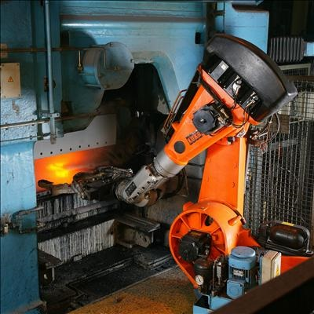

Robotics
Robotics is the interdisciplinary study and practice of the design, construction, operation, and use of robots.
Although many consider that robotics is designed to replace human labor, the goal of most robotics is to design machines that can help and assist humans. There are robots that are designed to do hazardous jobs. Robotics is a rapidly growing field.
Personally, I am one of many that has worked with robots: they we're used in a laboratory setting to pour a certain amount of liquid chemichals into tubes and, also, to label tubes amongst other tasks. I felt they were useful as they allowed the company to produce a greater quantity.
Some current and potential robotics applications include:
- Manufacturing
- Transport
- Domestic work
- Construction
- Mining
- Space exploration
- Energy
- Medical
- Agricultural
- Food processing
- Military